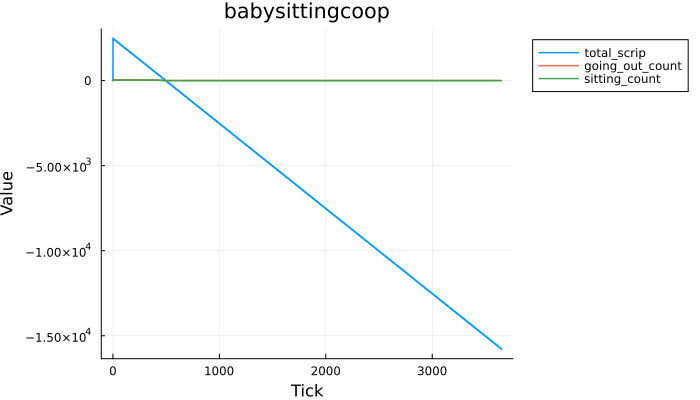
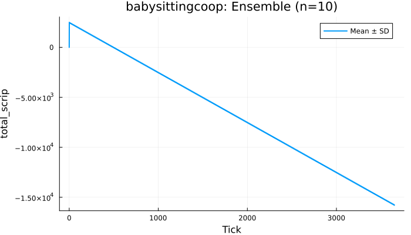
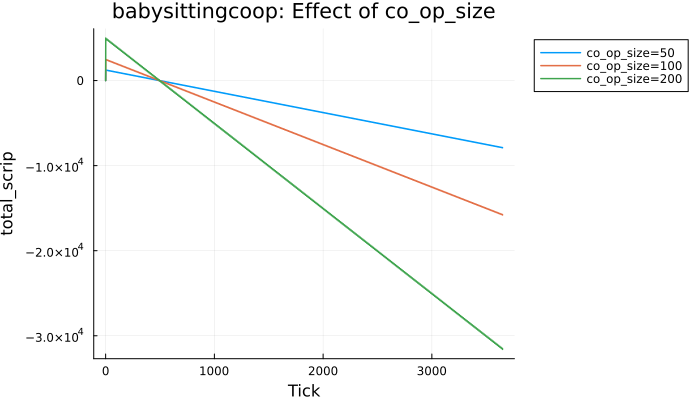

Baby Sitting Coop
Overview
This vignette demonstrates the Baby Sitting Coop model implemented in ArkModelZoo.jl using the Ark.jl ECS framework.
Parameters
| Parameter | Type | Default | Description |
|---|---|---|---|
co_op_size | Int | 100 | co op size |
initial_scrip | Float64 | 25.0 | initial scrip |
mean_hours_out | Int | 4 | mean hours out |
want_to_go_out_probability | Float64 | 0.5 | want to go out probability |
want_to_sit_probability | Float64 | 0.5 | want to sit probability |
monthly_dues | Float64 | 0.6 | monthly dues |
desired_times_out_reserve | Float64 | 0.0 | desired times out reserve |
willing_to_sit_prob | Float64 | 0.0 | willing to sit prob |
years | Int | 10 | years |
cycle_amplitude | Float64 | 0.0 | cycle amplitude |
multiple_sitees | Bool | true | multiple sitees |
clear_sitter_market | Bool | false | clear sitter market |
auto_adjust | Bool | false | auto adjust |
hours_out_distribution | String | "uniform" | hours out distribution |
max_ticks | Int | 3650 | 365 * years |
Source Code
The Julia code to run this model:
using ArkModelZoo
_, trajectory = run_babysittingcoop()Time Series

Ensemble Runs
Ten replicates with different random seeds, showing mean ± standard deviation.

Parameter Sensitivity
Varying co_op_size.

Appendix: Source Code
This model is implemented in the Ark.jl Entity-Component-System (ECS) framework. The code is split into five files, each with a distinct role:
- Parameters: a mutable struct holding all configurable values.
- Components: lightweight data types attached to individual entities (agents).
- Resources: world-level shared state accessible to all systems.
- Systems: functions that operate on entities each tick, defining model behavior.
- Model: wiring that assembles the world, registers resources and systems, and provides the run entry point.
Parameters (parameters.jl)
The parameter struct uses @kwdef so that every field has a default value and can be overridden by keyword. These defaults match the original NetLogo model’s slider settings.
Base.@kwdef mutable struct BSitParams
co_op_size::Int = 100
initial_scrip::Float64 = 25.0
mean_hours_out::Int = 4
want_to_go_out_probability::Float64 = 0.5
want_to_sit_probability::Float64 = 0.5
monthly_dues::Float64 = 0.6
desired_times_out_reserve::Float64 = 0.0
willing_to_sit_prob::Float64 = 0.0
years::Int = 10
cycle_amplitude::Float64 = 0.0
multiple_sitees::Bool = true
clear_sitter_market::Bool = false
auto_adjust::Bool = false
hours_out_distribution::String = "uniform"
max_ticks::Int = 3650 # 365 * years
seed::Int = 42
endComponents (components.jl)
Components are lightweight data types attached to individual entities (agents). Mutable structs hold per-entity state, while empty tag structs act as markers for the ECS query system to efficiently filter entities.
struct BSitDummy endResources (resources.jl)
Resources are world-level singletons shared across all systems, used for global state and aggregate statistics.
mutable struct BSitState
n_agents::Int
scrip::Vector{Float64}
scrip_needed::Vector{Float64}
want_sitter::Vector{Bool}
want_to_go_out::Vector{Bool}
enough_scrip::Vector{Bool}
going_out::Vector{Bool}
want_to_sit::Vector{Bool}
sitting::Vector{Bool}
total_hours_out::Float64
cycle_pos::Float64
stop_run::Bool
end
function BSitState()
BSitState(0, Float64[], Float64[], Bool[], Bool[], Bool[], Bool[], Bool[], Bool[], 0.0, 0.0, false)
end
function _bsit_add_agent!(state::BSitState, initial_scrip::Float64)
state.n_agents += 1
push!(state.scrip, initial_scrip)
push!(state.scrip_needed, 0.0)
push!(state.want_sitter, false)
push!(state.want_to_go_out, false)
push!(state.enough_scrip, false)
push!(state.going_out, false)
push!(state.want_to_sit, false)
push!(state.sitting, false)
return state.n_agents
end
function _bsit_reset_flags!(state::BSitState)
n = state.n_agents
@inbounds for i in 1:n
state.scrip_needed[i] = 0.0
state.want_sitter[i] = false
state.want_to_go_out[i] = false
state.enough_scrip[i] = false
state.going_out[i] = false
state.want_to_sit[i] = false
state.sitting[i] = false
end
end
mutable struct BSitStats
total_scrip::Float64
max_scrip::Float64
going_out_count::Int
sitting_count::Int
want_sitter_count::Int
want_to_sit_count::Int
quiet_evening_count::Int
no_sitter_count::Int
no_sitting_jobs_count::Int
not_enough_scrip_count::Int
sitting_as_1st_choice_count::Int
sitting_as_2nd_choice_count::Int
end
function BSitStats()
BSitStats(0.0, 0.0, 0, 0, 0, 0, 0, 0, 0, 0, 0, 0)
endSystems (systems.jl)
Systems contain the model logic and execute in a defined order each tick. Each system struct implements either initialize! (run once at setup) or update! (run every tick).
# --- Helpers ---
# NetLogo: (random 100) / 100 → 0.00, 0.01, ... 0.99
function _bsit_random_probability(rng)
return rand(rng, 0:99) / 100.0
end
# NetLogo: seasonally-adjusted-prob [p cycle-p]
function _bsit_seasonally_adjusted_prob(p::Float64, cycle_p::Float64)
diff = if cycle_p > 0
1.0 - p
elseif cycle_p == 0.0
0.0
else
p
end
return p + diff * cycle_p
end
# NetLogo: percent-of-limit [amount limit]
function _bsit_percent_of_limit(amount::Float64, limit::Float64)
return min(1.0, max(0.0, amount / limit))
end
# NetLogo: percent-of-desired-times-out-reserve (agent-level, depends on scrip)
function _bsit_percent_of_desired_times_out_reserve(scrip::Float64, params)
if params.desired_times_out_reserve == 0.0
return 1.0
end
return _bsit_percent_of_limit(scrip, Float64(params.mean_hours_out) * params.desired_times_out_reserve)
end
# NetLogo: get-want-to-go-out-probability (agent-level)
function _bsit_get_want_to_go_out_probability(scrip::Float64, params, cycle_pos::Float64)
pct = _bsit_percent_of_desired_times_out_reserve(scrip, params)
raw = min(pct, params.want_to_go_out_probability)
return _bsit_seasonally_adjusted_prob(raw, cycle_pos)
end
# NetLogo: get-want-to-sit-probability (agent-level)
function _bsit_get_want_to_sit_probability(scrip::Float64, params, cycle_pos::Float64)
pct = _bsit_percent_of_desired_times_out_reserve(scrip, params)
raw = max(1.0 - pct, params.want_to_sit_probability)
return _bsit_seasonally_adjusted_prob(raw, -cycle_pos)
end
# NetLogo: get-event-length — returns hours-out-wanted for one agent
function _bsit_get_event_length(rng, scrip::Float64, params, cycle_pos::Float64)
if _bsit_random_probability(rng) > _bsit_get_want_to_go_out_probability(scrip, params, cycle_pos)
return 0
end
dist = params.hours_out_distribution
mho = params.mean_hours_out
if dist == "uniform"
# NetLogo integer arithmetic: mean-hours-out + mean-hours-out / 2
# With mho=4: 4 + div(4,2) = 6, random 6 → 0..5, +1 → 1..6
upper = mho + div(mho, 2)
return rand(rng, 0:(upper - 1)) + 1
elseif dist == "poisson"
return _bsit_random_poisson(rng, mho - 1) + 1
else # "none"
return mho
end
end
# Simple Poisson sampler (Knuth algorithm) — no Distributions.jl needed
function _bsit_random_poisson(rng, lambda::Int)
L = exp(-Float64(lambda))
k = 0
p = 1.0
while true
k += 1
p *= rand(rng)
if p < L
return k - 1
end
end
end
# NetLogo: repeat-to [xs n] — double list until >= n, then take n random elements
function _bsit_repeat_to(rng, xs::Vector{Int}, n::Int)
buf = copy(xs)
while length(buf) < n
append!(buf, xs)
end
shuffle!(rng, buf)
return buf[1:n]
end
# NetLogo: pay-sitter [sittee sitter source]
function _bsit_pay_sitter!(state::BSitState, sittee::Int, sitter::Int)
payment = state.scrip_needed[sittee]
state.scrip[sittee] -= payment
state.going_out[sittee] = true
state.scrip[sitter] += payment
state.sitting[sitter] = true
state.total_hours_out += payment
end
# --- plan-evening (shuffled order, per NetLogo ask turtles) ---
function _bsit_plan_evening!(rng, state::BSitState, params, cycle_pos::Float64)
order = collect(1:state.n_agents)
shuffle!(rng, order)
@inbounds for i in order
hours = _bsit_get_event_length(rng, state.scrip[i], params, cycle_pos)
state.scrip_needed[i] = Float64(hours)
if hours > 0
state.want_to_go_out[i] = true
if state.scrip[i] >= state.scrip_needed[i]
state.want_sitter[i] = true
state.enough_scrip[i] = true
end
end
if !state.want_sitter[i]
sit_prob = _bsit_get_want_to_sit_probability(state.scrip[i], params, cycle_pos)
if _bsit_random_probability(rng) < sit_prob
state.want_to_sit[i] = true
end
end
end
end
# --- match-sitees-and-sitters ---
function _bsit_match!(rng, state::BSitState, params)
want_sitters = Int[]
available_sitters = Int[]
@inbounds for i in 1:state.n_agents
if state.want_sitter[i]
push!(want_sitters, i)
end
if state.want_to_sit[i]
push!(available_sitters, i)
end
end
nw = length(want_sitters)
na = length(available_sitters)
if nw == 0 || na == 0
if nw > 0 && na == 0
return # no sitters available
end
return
end
if nw < na
shuffle!(rng, available_sitters)
available_sitters = available_sitters[1:nw]
na = nw
elseif nw > na
if params.multiple_sitees && na > 0
available_sitters = _bsit_repeat_to(rng, available_sitters, nw)
na = nw
else
shuffle!(rng, want_sitters)
want_sitters = want_sitters[1:na]
nw = na
end
end
# Shuffle want_sitters for random pairing (NetLogo n-of is random)
shuffle!(rng, want_sitters)
shuffle!(rng, available_sitters)
@inbounds for i in 1:length(want_sitters)
_bsit_pay_sitter!(state, want_sitters[i], available_sitters[i])
end
end
# --- clear-sitter-market (only when clear_sitter_market is true) ---
function _bsit_clear_sitter_market!(rng, state::BSitState, params)
# uncleared = want-sitter and not going-out
uncleared = Int[]
@inbounds for i in 1:state.n_agents
if state.want_sitter[i] && !state.going_out[i]
push!(uncleared, i)
end
end
isempty(uncleared) && return
# Split into sitters-set and sittees
sitters_set = Int[]
sittees = Int[]
for i in uncleared
if _bsit_random_probability(rng) < params.willing_to_sit_prob
push!(sitters_set, i)
else
push!(sittees, i)
end
end
sitters = copy(sitters_set)
ns = length(sitters)
nt = length(sittees)
if ns > nt
shuffle!(rng, sitters)
sitters = sitters[1:nt]
else
shuffle!(rng, sittees)
sittees = sittees[1:ns]
end
for i in 1:length(sittees)
_bsit_pay_sitter!(state, sittees[i], sitters[i])
end
# Extra sitters: those from sitters_set not yet sitting
extra = Int[]
for i in sitters_set
if !state.sitting[i]
push!(extra, i)
end
end
ne = length(extra)
half = div(ne, 2)
if half == 0
return
end
shuffle!(rng, extra)
sittees2 = extra[1:half]
remaining = extra[(half + 1):end]
shuffle!(rng, remaining)
sitters2 = remaining[1:min(half, length(remaining))]
for i in 1:length(sitters2)
_bsit_pay_sitter!(state, sittees2[i], sitters2[i])
end
end
# --- check-consistency ---
function _bsit_check_consistency!(state::BSitState, stats::BSitStats, params)
n = state.n_agents
# Count categories
want_sitter_count = 0
want_to_sit_count = 0
quiet_evening_count = 0
want_to_go_out_count = 0
not_enough_scrip_count = 0
going_out_count = 0
sitting_count = 0
sitting_as_1st_choice_count = 0
sitting_as_2nd_choice_count = 0
frustrated_want_sitter = 0
frustrated_want_to_sit = 0
@inbounds for i in 1:n
ws = state.want_sitter[i]
wts = state.want_to_sit[i]
go = state.going_out[i]
si = state.sitting[i]
wtgo = state.want_to_go_out[i]
es = state.enough_scrip[i]
if ws
want_sitter_count += 1
end
if wts
want_to_sit_count += 1
end
if !ws && !wts
quiet_evening_count += 1
end
if wtgo
want_to_go_out_count += 1
if !es
not_enough_scrip_count += 1
end
end
if go
going_out_count += 1
end
if si
sitting_count += 1
end
if ws && si
sitting_as_2nd_choice_count += 1
end
if wts && si
sitting_as_1st_choice_count += 1
end
if ws && !go && !si
frustrated_want_sitter += 1
end
if wts && !si
frustrated_want_to_sit += 1
end
end
no_sitter_count = frustrated_want_sitter
no_sitting_jobs_count = frustrated_want_to_sit
# Store stats
stats.want_sitter_count = want_sitter_count
stats.want_to_sit_count = want_to_sit_count
stats.quiet_evening_count = quiet_evening_count
stats.going_out_count = going_out_count
stats.sitting_count = sitting_count
stats.no_sitter_count = no_sitter_count
stats.no_sitting_jobs_count = no_sitting_jobs_count
stats.not_enough_scrip_count = not_enough_scrip_count
stats.sitting_as_1st_choice_count = sitting_as_1st_choice_count
stats.sitting_as_2nd_choice_count = sitting_as_2nd_choice_count
# Check consistency — set stop_run if violated
if frustrated_want_sitter > 0 && frustrated_want_to_sit > 0
state.stop_run = true
end
if want_sitter_count + want_to_sit_count + quiet_evening_count != n
state.stop_run = true
end
if want_sitter_count + not_enough_scrip_count != want_to_go_out_count
state.stop_run = true
end
if going_out_count + no_sitter_count + sitting_as_2nd_choice_count != want_sitter_count
state.stop_run = true
end
if sitting_as_1st_choice_count + no_sitting_jobs_count != want_to_sit_count
state.stop_run = true
end
if !params.multiple_sitees && going_out_count != sitting_count
state.stop_run = true
end
end
# --- Systems ---
struct InitBSitSystem <: System end
function initialize!(::InitBSitSystem, world::World)
params = get_resource(world, BSitParams)
state = get_resource(world, BSitState)
for _ in 1:params.co_op_size
_bsit_add_agent!(state, params.initial_scrip)
end
return nothing
end
struct BSitGoSystem <: System end
function update!(::BSitGoSystem, world::World)
params = get_resource(world, BSitParams)
rng = get_resource(world, RNGResource).rng
state = get_resource(world, BSitState)
stats = get_resource(world, BSitStats)
tick = get_resource(world, Tick)
my_ticks = tick.tick
# Reset flags each tick
_bsit_reset_flags!(state)
# Compute cycle position
state.cycle_pos = sin(deg2rad(my_ticks % 360)) * params.cycle_amplitude
# Plan evening
_bsit_plan_evening!(rng, state, params, state.cycle_pos)
# Match sitees and sitters
_bsit_match!(rng, state, params)
# Clear sitter market (only if enabled)
if params.clear_sitter_market
_bsit_clear_sitter_market!(rng, state, params)
end
# Check consistency
_bsit_check_consistency!(state, stats, params)
# Compute aggregate stats
stats.total_scrip = sum(state.scrip)
max_scrip_now = maximum(state.scrip)
stats.max_scrip = max(stats.max_scrip, ceil(max_scrip_now))
# Auto-adjust monthly dues (only if enabled)
if params.auto_adjust
if stats.no_sitting_jobs_count > 10
params.monthly_dues = -0.3
end
if stats.no_sitting_jobs_count < 5
params.monthly_dues = 0.6
end
end
# Monthly dues every 12 ticks
if my_ticks % 12 == 0
@inbounds for i in 1:state.n_agents
state.scrip[i] -= params.monthly_dues
end
end
# Stop condition
if state.stop_run
get_resource(world, Terminate).stop = true
end
return nothing
end
struct BSitTerminationSystem <: System end
function update!(::BSitTerminationSystem, world::World)
params = get_resource(world, BSitParams)
tick = get_resource(world, Tick)
if tick.tick + 1 >= params.max_ticks
get_resource(world, Terminate).stop = true
end
return nothing
endModel (model.jl)
The model file assembles all pieces: it creates the ECS World with the required component types, registers resources, builds the Scheduler with systems in execution order, and exposes the public run entry point. The observer pattern records the trajectory each tick.
function babysittingcoop_world(; initial_capacity::Int = 128)
return World(BSitDummy; initial_capacity=initial_capacity, allow_mutable=true)
end
function babysittingcoop_systems()
return (
InitBSitSystem(),
BSitGoSystem(),
BSitTerminationSystem(),
)
end
function babysittingcoop_model(params::BSitParams = BSitParams())
world = babysittingcoop_world()
_add_standard_resources!(world, params)
add_resource!(world, BSitState())
add_resource!(world, BSitStats())
scheduler = Scheduler(world, babysittingcoop_systems())
initialize!(scheduler)
return scheduler
end
struct BabysittingCoopObserver end
function babysittingcoop_headers(::BabysittingCoopObserver)
return ["total_scrip", "going_out_count", "sitting_count"]
end
function babysittingcoop_values(::BabysittingCoopObserver, world::World)
stats = get_resource(world, BSitStats)
return Float64[stats.total_scrip, stats.going_out_count, stats.sitting_count]
end
function run_babysittingcoop(; params::BSitParams = BSitParams(), observe::Bool = true)
return _run_model(babysittingcoop_model, BabysittingCoopObserver(), babysittingcoop_values; params, observe)
end